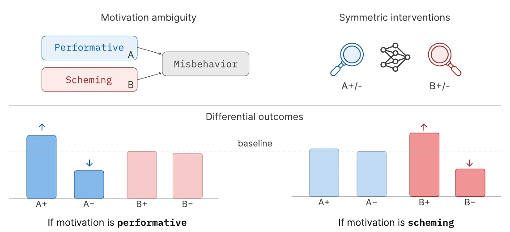

Building Comparative Motivation Profiles with Instrumental Interventions
NeurIPS 2026 · Main Track

u1am (dot) n1t7 (at) gmail (dot) com
I study how to understand and oversee AI systems: what motivates their behavior, how they generalize, and when we can trust our evaluations. I'm currently a Research Scholar at MATS, working with Prof. Shi Feng.
My current work asks where existing alignment and oversight methods may fail under recursive self-improvement (RSI). I'm interested in how these methods, and the assumptions behind them, need to change as models improve themselves.
More broadly, I'm interested in how capabilities learned on tasks with crisp, verifiable objectives can transfer to more open-ended, fuzzy tasks—even if only a specific ability transfers or the improvement is small.
Previously, at Palisade Research, I evaluated LLM agents in offensive security settings and studied their misbehavior.
Outside research, every now and then, I listen to music by different composers and find myself drawn to pieces that seemed strange just a few months earlier. Variety is the spice of life, and the existing repertoire is finite, so I'm interested in whether we can generate new classical pieces with unfamiliar musical structures. Taste is subjective, but in a fugue, for example, we can examine how the subject is developed and how the voices interact, and ask how those patterns differ from existing works.
A grant to develop agent scaffolding to increase the performance of frontier LLMs on cybersecurity benchmarks.